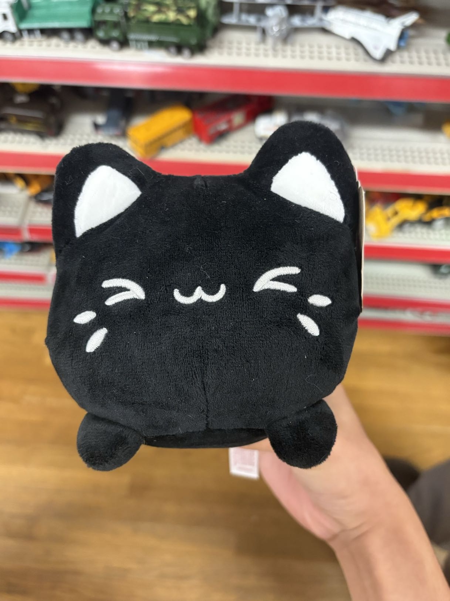

I am an ambitious sophomore at UCSD, striving to put his mark in the world. I am looking for opportunities to expand my knowledge in the field of Data Science. With a passion for problem-solving and data analysis, I have always wanted to apply the skills I have learned into my everyday life. I am excited to be part of the future of technological innovation and hopefully contribute something to its growth.
